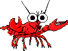
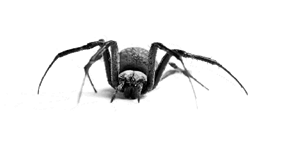

ANTROPODOS
Los artrópodos, constituyen el filo más numeroso y diverso del reino animal. El grupo incluye animales invertebrados dotados de un esqueleto externo y apéndices articulados; los insectos, arácnidos, crustáceos y miriápodos, entre otros
|  |
|  |